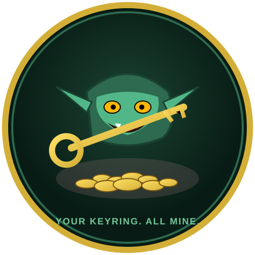

The idea vault, plan pit and roadmap lair behind Key-Bitcher. Everything shiny gets hoarded here.
Every coin below is one idea, one task, one platform. Stash yours.
What this page is: a living roadmap + idea pile for the Key-Bitcher project. Nothing here is sacred — ideas get stolen from other projects, merged, split, or buried. If it glitters, it goes in.
Idea spark of gold, unproven
Plan scheduled & staked out
WIP the goblin is digging
Wanted need a helper goblin
✅ done 🔄 in motion 📌 queued
💀 buried (do not revive)
🪙 = hoard value: bigger pile = higher priority.
Open an issue titled HOARD:… and your idea gets a coin. Good ones get minted into the roadmap.
Shiny but unproven sparks. A few may become plans; most will be polished until they shine.
Encrypted wallet file (keyring + password) so keys survive OS reinstall and get imported into any environment in one command.
Diff the local .env against the hoard and report which keys are stale, missing or swapped. Bitch Mode makes it very personal.
Match your codebase's referenced env vars against the ones actually declared. Swipe left on orphans, swipe right on secrets.
Scheduled key rotation that herds all environments to a new credential with minimal downtime and a very smug summary log.
Real-time status ring in the terminal showing which Wave environment is live, which keys it holds, and whether it's safe to drink from.
Background watcher that auto-pulls new S3/Backblaze secrets the moment the object key changes. The goblin never sleeps.
Concrete, staked-out work. Shovel in hand.
Strict mode (key-bitcher verify --strict), file permission warnings on all platforms, and a pre-commit guard hook.
Multiple S3/Backblaze buckets + profiles in key-bitcher.toml, plus profile switching for project-specific stacks.
Terminal UI (ratatui) panel: view, copy, rotate and test keys without touching a shell. Includes the hoard status gauge.
Auto-detect Wave environments, framework conventions and .env formats so init writes the right config the first time.
Key-Bitcher is cross-platform Rust. The hoard is not complete until every shelf below is full.
Every box you tick stashes another coin. Cross-platform support needs hands on all shelves.
key-bitcher via Homebrew, Scoop & cargo installone command install everywhereverify --strict ruleset + per-OS permission auditWindows ACLs, POSIX modesEverything else the goblin knows. Stash it all.
Rust 1.70+ · clap · tokio · serde · AWS SDK (S3) · Backblaze B2. Config in key-bitcher.toml.
Full docs live at Key-Bitcher HQ — getting started, commands, configuration, Wave integration, architecture, security, IDE setup, development.
merlin-tribukait/KEY-BITCHER — issues prefixed HOARD: feed this page. Watch, star, fork, hoard.
All keys belong strictly to the Goblin. Sharing across environments is forbidden. Look, but do not touch the vault. Attempted theft results in immediate token revocation.
If it is not broke, do not touch it. If it is critically broke, the Bitch complains loudly. No smiling during key rotation.
Windows native: solid. Cross-platform: actively digged. UI + editors: treasure on the horizon. Your help = faster hoard.